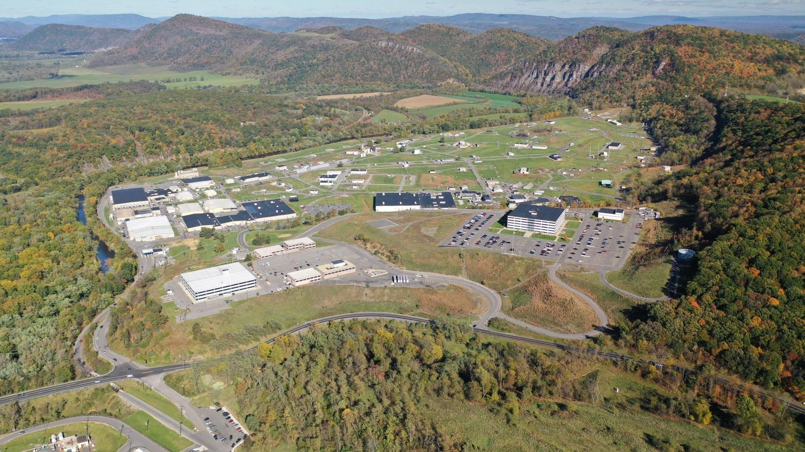
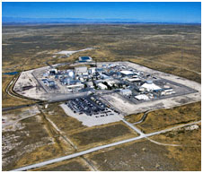

The van der Knaap lab conducts research on tomato fruit morphology to better understand fruit development, organ patterning, and the molecular and genetic diversity that led to tomato domestication and selection.
I assisted lab members with their research while working on my own bioinformatics project. In the field, I cared for and grew tomato plants, cleaned the greenhouse, and disposed of transgenic plants. In the lab, I did prep work for plant transformations, DNA extractions, PCR, and gel electrophoresis. In addition, I gathered, organized, and displayed data for lab meeting presentations. My personal project was developing a batch processing pipeline for tomato fruit phenotype analysis.
I hope to intern at Northrop Grumman or a national laboratory during the Summer of 2023
 